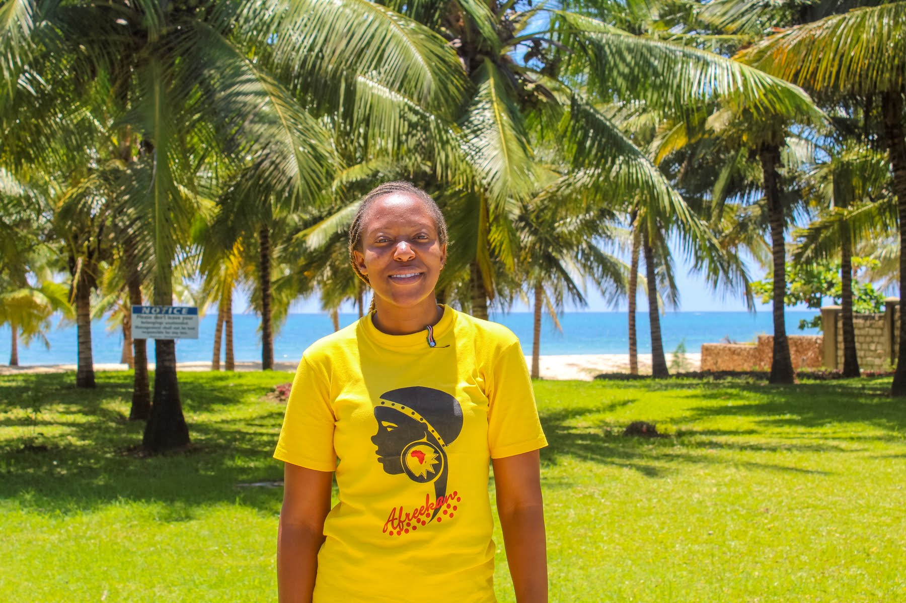

Welcome to My Portifolio!
My name is Irene Wanjiku Njeru
Here is my facebook link text
Am a highly resourceful, service and result oriented Business Administration professional with significant knowledge and experience in :
Holding a Bachelor’s degree in Business Administration and endowed with well developed communication and organization skills. I am keen-to-details in handling every assignment to ensure reliability and high quality results to ensure accountability and maximum productivity.
Some of my hobbies include:
With the flooding job markets in Kenya Programming came as an option as there are a few women in the industry.
Some of the projects i have done are: